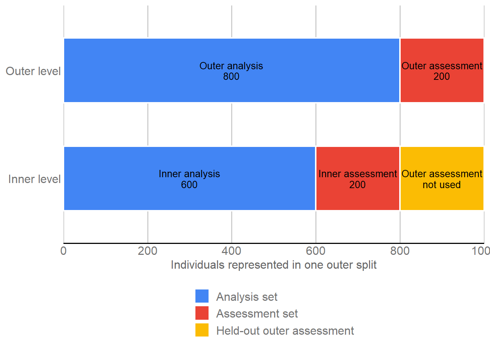

Last updated: 2026-09-04
Checks: 7 0
Knit directory:
Genomic-Prediction-using-Regularized-Artificial-Neural-Networks/
This reproducible R Markdown analysis was created with workflowr (version 1.7.2). The Checks tab describes the reproducibility checks that were applied when the results were created. The Past versions tab lists the development history.
Great! Since the R Markdown file has been committed to the Git repository, you know the exact version of the code that produced these results.
Great job! The global environment was empty. Objects defined in the global environment can affect the analysis in your R Markdown file in unknown ways. For reproduciblity it’s best to always run the code in an empty environment.
The command set.seed(20260821) was run prior to running
the code in the R Markdown file. Setting a seed ensures that any results
that rely on randomness, e.g. subsampling or permutations, are
reproducible.
Great job! Recording the operating system, R version, and package versions is critical for reproducibility.
Nice! There were no cached chunks for this analysis, so you can be confident that you successfully produced the results during this run.
Great job! Using relative paths to the files within your workflowr project makes it easier to run your code on other machines.
Great! You are using Git for version control. Tracking code development and connecting the code version to the results is critical for reproducibility.
The results in this page were generated with repository version 6a37221. See the Past versions tab to see a history of the changes made to the R Markdown and HTML files.
Note that you need to be careful to ensure that all relevant files for
the analysis have been committed to Git prior to generating the results
(you can use wflow_publish or
wflow_git_commit). workflowr only checks the R Markdown
file, but you know if there are other scripts or data files that it
depends on. Below is the status of the Git repository when the results
were generated:
Ignored files:
Ignored: .Rhistory
Ignored: .Rproj.user/
Ignored: .github/
Ignored: .local/
Ignored: code/legacy/
Ignored: data/dados_reais/Fenótipos 2014_2015_2016_C.arabica (1).xlsx
Ignored: data/dados_reais/Fenótipos 2014_2015_2016_C.arabica.xlsx
Ignored: data/dados_reais/FiltStep1_minQ10.0_minDP3_DPrange15-maxMeanDepth750_miss0.4_maf0.01_mac1_EMB_291701_SNPs_Raw.vcf.012.012
Ignored: data/dados_reais/FiltStep1_minQ10.0_minDP3_DPrange15-maxMeanDepth750_miss0.4_maf0.01_mac1_EMB_291701_SNPs_Raw.vcf.012.012.indv
Ignored: data/dados_reais/FiltStep1_minQ10.0_minDP3_DPrange15-maxMeanDepth750_miss0.4_maf0.01_mac1_EMB_291701_SNPs_Raw.vcf.012.012.pos
Ignored: data/dados_reais/FiltStep1_minQ10_minDP3_DPrange15-750_miss0.4_maf0.01_mac1_EMB_291701_filt1_snps_RAW.012.indv.txt
Ignored: data/dados_reais/FiltStep1_minQ10_minDP3_DPrange15-750_miss0.4_maf0.01_mac1_EMB_291701_filt1_snps_RAW.012.pos.txt
Ignored: data/dados_reais/FiltStep1_minQ10_minDP3_DPrange15-750_miss0.4_maf0.01_mac1_EMB_291701_filt1_snps_RAW.012.txt
Ignored: data/dados_reais/Rótulos C. arabica_Proj_Piloto.xlsx
Ignored: data/dados_reais/Rótulos Novos SNPs.xls
Ignored: data/dados_reais/dados_cafe.xlsx
Ignored: data/dados_reais/fpls-09-01934.pdf
Ignored: data/dados_reais/geno_real.rds
Ignored: data/dados_reais/pheno_real.rds
Ignored: data/dados_reais/plants-13-01876-v2.pdf
Ignored: data/dados_reais/pos_geno_real.rds
Ignored: renv/library/
Ignored: renv/staging/
Untracked files:
Untracked: output/simulated/m02/
Note that any generated files, e.g. HTML, png, CSS, etc., are not included in this status report because it is ok for generated content to have uncommitted changes.
These are the previous versions of the repository in which changes were
made to the R Markdown
(analysis/simulated_data_validation.Rmd) and HTML
(docs/simulated_data_validation.html) files. If you’ve
configured a remote Git repository (see ?wflow_git_remote),
click on the hyperlinks in the table below to view the files as they
were in that past version.
| File | Version | Author | Date | Message |
|---|---|---|---|---|
| Rmd | 6a37221 | github-actions[bot] | 2026-09-04 | Refine M02 validation wording |
| Rmd | 837a085 | Weverton Gomes da Costa | 2026-09-04 | Refine M02 nested validation reader flow |
| html | c8124ab | WevertonGomesCosta | 2026-09-02 | Refresh integrated M01-M05 reproducibility metadata |
| html | 63c1f3f | WevertonGomesCosta | 2026-09-01 | Rebuild M02 after editorial revision |
| Rmd | c644314 | Weverton Gomes da Costa | 2026-09-01 | Refine M02 validation design tutorial |
| html | 217e778 | WevertonGomesCosta | 2026-09-01 | Complete reader-first didactic cleanup |
| Rmd | dea5684 | github-actions[bot] | 2026-08-31 | Simplify tutorials while preserving audit contracts |
| html | 7a3fbcd | WevertonGomesCosta | 2026-08-31 | Refresh tutorial site after final build |
| Rmd | f229ff3 | WevertonGomesCosta | 2026-08-31 | Refactor data audit and validation as tutorials |
| html | f229ff3 | WevertonGomesCosta | 2026-08-31 | Refactor data audit and validation as tutorials |
| html | f228245 | WevertonGomesCosta | 2026-08-31 | Publish reader-focused simulated workflow |
| Rmd | ae243c3 | WevertonGomesCosta | 2026-08-29 | Refine validation design for readers |
| html | fa907f6 | WevertonGomesCosta | 2026-08-28 | Publish audited workflowr documentation |
| Rmd | 0b8a4f6 | WevertonGomesCosta | 2026-08-28 | Revise canonical workflow documentation and scientific narrative |
| html | 0b8a4f6 | WevertonGomesCosta | 2026-08-28 | Revise canonical workflow documentation and scientific narrative |
| html | f7779fd | WevertonGomesCosta | 2026-08-27 | Build site. |
| html | 3caadce | WevertonGomesCosta | 2026-08-27 | Build site. |
| Rmd | 0ec25da | WevertonGomesCosta | 2026-08-27 | refactor: organize canonical outputs and local runtime artifacts |
| html | e48bb57 | WevertonGomesCosta | 2026-08-27 | Build site. |
| Rmd | f9c736e | WevertonGomesCosta | 2026-08-27 | refactor: establish canonical simulated genomic prediction workflow |
| html | f9c736e | WevertonGomesCosta | 2026-08-27 | refactor: establish canonical simulated genomic prediction workflow |
This module defines the nested cross-validation design used by every genomic prediction model fitted to the simulated population. The partitions are created before model fitting so model development and final evaluation use the same individuals for GBLUP-ADE and all ANN variants.
The validation design has four fixed features:
Two terms are used throughout the module:
The distinction is especially important in nested validation. The outer assessment individuals remain untouched until final prediction, whereas the inner assessment individuals are used only to compare ANN candidates inside the corresponding outer analysis set.
Three packages are used, each for a specific reader-facing task:
knitr formats the validation settings,
partition sizes, and design summaries as tables that can be inspected
directly in the page.ggplot2 constructs the diagram that
shows how the 1,000 individuals are separated at the outer and inner
validation levels.ggthemes applies the same Google Docs
theme and color scale adopted in the preceding module so the project
keeps a consistent visual style.The complete partitioning procedure is controlled by four values. They are set once here and then reused for every scenario and prediction method:
SEED_GLOBAL <- 20260821L
N_OUTER_REPEATS <- 5L
N_OUTER_FOLDS <- 5L
N_INNER_FOLDS <- 4L
validation_parameters <- data.frame(
Parameter = c(
"Global seed",
"Outer repetitions",
"Outer folds per repetition",
"Inner folds per outer split"
),
Value = c(
SEED_GLOBAL,
N_OUTER_REPEATS,
N_OUTER_FOLDS,
N_INNER_FOLDS
),
Role = c(
"reproducible partition generation",
"repeat held-out evaluation",
"define outer assessment sets",
"compare ANN candidates inside outer analysis"
)
)
validation_parameters |>
knitr::kable(
format = "html",
caption = "Fixed nested cross-validation settings",
row.names = FALSE,
table.attr = 'class="table table-striped table-hover table-bordered"'
)| Parameter | Value | Role |
|---|---|---|
| Global seed | 20260821 | reproducible partition generation |
| Outer repetitions | 5 | repeat held-out evaluation |
| Outer folds per repetition | 5 | define outer assessment sets |
| Inner folds per outer split | 4 | compare ANN candidates inside outer analysis |
The global seed is combined with repetition and fold identifiers later in the module. This produces distinct but exactly reproducible assignments without using any response or model information.
The shared simulated-data object created in M01 contains the aligned phenotype, true genetic value, and genotype matrices. Before any fold is generated, the reader needs to verify which rows define the population available for partitioning.
The next chunk therefore does three things:
output/;# Read the shared simulated-data object prepared in M01.
simulated_common <- readRDS(
"output/simulated/audit/preprocessed_simulated_common.rds"
)
input_components <- data.frame(
Component = c("phenotype", "true_genetic_value", "genotype_m101"),
Rows = c(
nrow(simulated_common$phenotype),
nrow(simulated_common$true_genetic_value),
nrow(simulated_common$genotype_m101)
),
Columns = c(
ncol(simulated_common$phenotype),
ncol(simulated_common$true_genetic_value),
ncol(simulated_common$genotype_m101)
)
)
input_components |>
knitr::kable(
format = "html",
caption = "Aligned objects available before partition generation",
row.names = FALSE,
table.attr = 'class="table table-striped table-hover table-bordered"'
)| Component | Rows | Columns |
|---|---|---|
| phenotype | 1000 | 6 |
| true_genetic_value | 1000 | 6 |
| genotype_m101 | 1000 | 4010 |
# Use only the stored row identifiers to generate the folds.
ids <- as.integer(simulated_common$metadata$row_identifier)
individual_universe <- data.frame(
Quantity = c(
"Individuals used to generate folds",
"First row identifier",
"Last row identifier"
),
Observed = c(
length(ids),
min(ids),
max(ids)
)
)
individual_universe |>
knitr::kable(
format = "html",
caption = "Individual universe used for partition generation",
row.names = FALSE,
table.attr = 'class="table table-striped table-hover table-bordered"'
)| Quantity | Observed |
|---|---|
| Individuals used to generate folds | 1000 |
| First row identifier | 1 |
| Last row identifier | 1000 |
The displayed objects establish the partitioning universe:
The outer level provides the final held-out evaluation. In each repetition, the 1,000 row identifiers are shuffled reproducibly and assigned cyclically to five fold labels. Because 1,000 is divisible by five, every fold contains exactly 200 individuals.
For a given fold:
The code below repeats the same direct assignment procedure five times. The seed changes with the repetition number, which gives each repetition a distinct assignment while preserving exact reproducibility.
outer_assignment_list <- vector(
"list",
N_OUTER_REPEATS
)
# Build one balanced five-fold assignment for each repetition.
for (rep_id in seq_len(N_OUTER_REPEATS)) {
set.seed(SEED_GLOBAL + rep_id)
shuffled_ids <- sample(
ids,
size = length(ids),
replace = FALSE
)
assigned_folds <- rep(
seq_len(N_OUTER_FOLDS),
length.out = length(ids)
)
assignment <- data.frame(
ID = shuffled_ids,
Fold = assigned_folds,
stringsAsFactors = FALSE
)
# Sort only the displayed/stored rows; fold membership is already fixed.
assignment <- assignment[
order(assignment$ID),
,
drop = FALSE
]
rownames(assignment) <- NULL
outer_assignment_list[[rep_id]] <- data.frame(
Repetition = rep_id,
ID = assignment$ID,
OuterFold = assignment$Fold,
stringsAsFactors = FALSE
)
}
outer_assignments <- do.call(
rbind,
outer_assignment_list
)
rownames(outer_assignments) <- NULL
outer_assignments$SplitID <- sprintf(
"R%02d_F%02d",
outer_assignments$Repetition,
outer_assignments$OuterFold
)
# Count the assessment and analysis individuals in every outer split.
outer_sizes <- aggregate(
ID ~ Repetition + OuterFold + SplitID,
data = outer_assignments,
FUN = length
)
names(outer_sizes)[names(outer_sizes) == "ID"] <- "Assessment_N"
outer_sizes$Analysis_N <- length(ids) - outer_sizes$Assessment_N
outer_sizes |>
knitr::kable(
format = "html",
caption = "Sizes of the 25 outer validation splits",
row.names = FALSE,
table.attr = 'class="table table-striped table-hover table-bordered"'
)| Repetition | OuterFold | SplitID | Assessment_N | Analysis_N |
|---|---|---|---|---|
| 1 | 1 | R01_F01 | 200 | 800 |
| 1 | 2 | R01_F02 | 200 | 800 |
| 1 | 3 | R01_F03 | 200 | 800 |
| 1 | 4 | R01_F04 | 200 | 800 |
| 1 | 5 | R01_F05 | 200 | 800 |
| 2 | 1 | R02_F01 | 200 | 800 |
| 2 | 2 | R02_F02 | 200 | 800 |
| 2 | 3 | R02_F03 | 200 | 800 |
| 2 | 4 | R02_F04 | 200 | 800 |
| 2 | 5 | R02_F05 | 200 | 800 |
| 3 | 1 | R03_F01 | 200 | 800 |
| 3 | 2 | R03_F02 | 200 | 800 |
| 3 | 3 | R03_F03 | 200 | 800 |
| 3 | 4 | R03_F04 | 200 | 800 |
| 3 | 5 | R03_F05 | 200 | 800 |
| 4 | 1 | R04_F01 | 200 | 800 |
| 4 | 2 | R04_F02 | 200 | 800 |
| 4 | 3 | R04_F03 | 200 | 800 |
| 4 | 4 | R04_F04 | 200 | 800 |
| 4 | 5 | R04_F05 | 200 | 800 |
| 5 | 1 | R05_F01 | 200 | 800 |
| 5 | 2 | R05_F02 | 200 | 800 |
| 5 | 3 | R05_F03 | 200 | 800 |
| 5 | 4 | R05_F04 | 200 | 800 |
| 5 | 5 | R05_F05 | 200 | 800 |
The outer table should be read as follows:
The fold assignment table identifies membership, but the modeling
modules need explicit ID vectors. The next chunk converts every
SplitID into a list with its 800 analysis IDs and 200
assessment IDs.
An example from the first split is displayed so the reader can inspect both sizes and confirm that the overlap is zero.
outer_split_ids <- sort(
unique(outer_assignments$SplitID)
)
outer_splits <- setNames(
vector("list", length(outer_split_ids)),
outer_split_ids
)
# Store the two ID sets consumed later by GBLUP-ADE and ANN.
for (split_id in outer_split_ids) {
assessment_ids <- outer_assignments$ID[
outer_assignments$SplitID == split_id
]
analysis_ids <- setdiff(
ids,
assessment_ids
)
outer_splits[[split_id]] <- list(
split_id = split_id,
analysis_ids = sort(analysis_ids),
assessment_ids = sort(assessment_ids)
)
}
example_outer_split <- outer_splits[[1]]
outer_object_summary <- data.frame(
Component = c(
"analysis_ids",
"assessment_ids",
"overlap"
),
N = c(
length(example_outer_split$analysis_ids),
length(example_outer_split$assessment_ids),
length(
intersect(
example_outer_split$analysis_ids,
example_outer_split$assessment_ids
)
)
),
First_IDs = c(
paste(
head(example_outer_split$analysis_ids, 6),
collapse = ", "
),
paste(
head(example_outer_split$assessment_ids, 6),
collapse = ", "
),
"-"
)
)
outer_object_summary |>
knitr::kable(
format = "html",
caption = paste(
"Structure of outer split",
example_outer_split$split_id
),
row.names = FALSE,
table.attr = 'class="table table-striped table-hover table-bordered"'
)| Component | N | First_IDs |
|---|---|---|
| analysis_ids | 800 | 1, 2, 3, 4, 5, 6 |
| assessment_ids | 200 | 13, 16, 23, 25, 27, 28 |
| overlap | 0 |
|
The example makes the outer separation explicit: the 800 analysis IDs and 200 assessment IDs do not overlap, and the same list structure is stored for all 25 outer splits.
The inner level is created inside each outer analysis set. It is used for ANN hyperparameter selection and therefore cannot contain any of the 200 outer assessment individuals.
For each 800-individual outer analysis set:
The code repeats this procedure for all 25 outer splits, producing
100 inner splits in total. The outer assessment IDs never enter the
inner assignment operation because the starting vector is always
outer_split$analysis_ids.
inner_assignments_list <- vector(
"list",
length(outer_splits)
)
names(inner_assignments_list) <- names(outer_splits)
inner_splits <- setNames(
vector("list", length(outer_splits)),
names(outer_splits)
)
# Generate four inner folds separately within each outer analysis set.
for (split_id in names(outer_splits)) {
outer_split <- outer_splits[[split_id]]
split_tokens <- strsplit(
sub("^R", "", split_id),
"_F"
)[[1]]
rep_id <- as.integer(split_tokens[1])
outer_fold <- as.integer(split_tokens[2])
inner_seed <-
SEED_GLOBAL +
100000L +
rep_id * 100L +
outer_fold
set.seed(inner_seed)
shuffled_ids <- sample(
outer_split$analysis_ids,
size = length(outer_split$analysis_ids),
replace = FALSE
)
assigned_folds <- rep(
seq_len(N_INNER_FOLDS),
length.out = length(outer_split$analysis_ids)
)
assignment <- data.frame(
ID = shuffled_ids,
Fold = assigned_folds,
stringsAsFactors = FALSE
)
assignment <- assignment[
order(assignment$ID),
,
drop = FALSE
]
rownames(assignment) <- NULL
inner_assignments_list[[split_id]] <- data.frame(
SplitID = split_id,
Repetition = rep_id,
OuterFold = outer_fold,
ID = assignment$ID,
InnerFold = assignment$Fold,
stringsAsFactors = FALSE
)
current_inner_splits <- setNames(
vector("list", N_INNER_FOLDS),
paste0("I", seq_len(N_INNER_FOLDS))
)
# Convert every inner fold into explicit analysis and assessment ID sets.
for (inner_fold in seq_len(N_INNER_FOLDS)) {
inner_assessment_ids <- assignment$ID[
assignment$Fold == inner_fold
]
inner_analysis_ids <- setdiff(
outer_split$analysis_ids,
inner_assessment_ids
)
current_inner_splits[[paste0("I", inner_fold)]] <- list(
split_id = split_id,
inner_fold = inner_fold,
analysis_ids = sort(inner_analysis_ids),
assessment_ids = sort(inner_assessment_ids)
)
}
inner_splits[[split_id]] <- current_inner_splits
}
inner_assignments <- do.call(
rbind,
inner_assignments_list
)
rownames(inner_assignments) <- NULL
inner_sizes <- aggregate(
ID ~ SplitID + Repetition + OuterFold + InnerFold,
data = inner_assignments,
FUN = length
)
names(inner_sizes)[names(inner_sizes) == "ID"] <- "Assessment_N"
inner_sizes$Analysis_N <- 800L - inner_sizes$Assessment_NDisplaying all 100 rows would add little information because every split has the same size. The first 20 are shown as a representative sample of the stored design.
head(inner_sizes, 20) |>
knitr::kable(
format = "html",
caption = "First 20 of the 100 inner validation splits",
row.names = FALSE,
table.attr = 'class="table table-striped table-hover table-bordered"'
)| SplitID | Repetition | OuterFold | InnerFold | Assessment_N | Analysis_N |
|---|---|---|---|---|---|
| R01_F01 | 1 | 1 | 1 | 200 | 600 |
| R02_F01 | 2 | 1 | 1 | 200 | 600 |
| R03_F01 | 3 | 1 | 1 | 200 | 600 |
| R04_F01 | 4 | 1 | 1 | 200 | 600 |
| R05_F01 | 5 | 1 | 1 | 200 | 600 |
| R01_F02 | 1 | 2 | 1 | 200 | 600 |
| R02_F02 | 2 | 2 | 1 | 200 | 600 |
| R03_F02 | 3 | 2 | 1 | 200 | 600 |
| R04_F02 | 4 | 2 | 1 | 200 | 600 |
| R05_F02 | 5 | 2 | 1 | 200 | 600 |
| R01_F03 | 1 | 3 | 1 | 200 | 600 |
| R02_F03 | 2 | 3 | 1 | 200 | 600 |
| R03_F03 | 3 | 3 | 1 | 200 | 600 |
| R04_F03 | 4 | 3 | 1 | 200 | 600 |
| R05_F03 | 5 | 3 | 1 | 200 | 600 |
| R01_F04 | 1 | 4 | 1 | 200 | 600 |
| R02_F04 | 2 | 4 | 1 | 200 | 600 |
| R03_F04 | 3 | 4 | 1 | 200 | 600 |
| R04_F04 | 4 | 4 | 1 | 200 | 600 |
| R05_F04 | 5 | 4 | 1 | 200 | 600 |
The inner structure is constant across all outer splits:
The diagram below places the two levels on the same 1,000-individual scale. It shows why the outer assessment set cannot leak into ANN tuning:
validation_flow <- data.frame(
Level = c(
2, 2,
1, 1, 1
),
xmin = c(
0, 800,
0, 600, 800
),
xmax = c(
800, 1000,
600, 800, 1000
),
Role = c(
"Analysis set",
"Assessment set",
"Analysis set",
"Assessment set",
"Held-out outer assessment"
),
Label = c(
"Outer analysis\n800",
"Outer assessment\n200",
"Inner analysis\n600",
"Inner assessment\n200",
"Outer assessment\nnot used"
),
stringsAsFactors = FALSE
)
p_validation <- ggplot(validation_flow) +
geom_rect(
aes(
xmin = xmin,
xmax = xmax,
ymin = Level - 0.30,
ymax = Level + 0.30,
fill = Role
),
color = "white",
linewidth = 0.8
) +
geom_text(
aes(
x = (xmin + xmax) / 2,
y = Level,
label = Label
),
size = 3.6,
lineheight = 0.9
) +
scale_fill_gdocs() +
scale_x_continuous(
breaks = seq(0, 1000, 200),
limits = c(0, 1000),
expand = c(0, 0)
) +
scale_y_continuous(
breaks = c(1, 2),
labels = c("Inner level", "Outer level"),
limits = c(0.5, 2.5)
) +
labs(
x = "Individuals represented in one outer split",
y = NULL,
fill = NULL
) +
theme_gdocs() +
theme(
legend.position = "bottom"
)
print(p_validation)
Nested cross-validation structure for one outer split. Inner validation is restricted to the 800 outer-analysis individuals; the 200 outer-assessment individuals remain held out.
The diagram represents one outer split, but the same hierarchy is repeated for all 25 outer splits. This common structure is what allows every prediction method to be compared under the same held-out evaluations.
The folds are deliberately generated from a minimal set of information. This prevents the partition structure from adapting to the response, the simulated truth, or the prediction method.
The table distinguishes what participates in fold generation from what remains outside it:
partition_information <- data.frame(
Information = c(
"Individual row identifier",
"Deterministic seed",
"Simulation scenario",
"Phenotype",
"True genetic value",
"Prediction model"
),
Partition_role = c(
"Used",
"Used",
"Not used",
"Not used",
"Not used",
"Not used"
)
)
partition_information |>
knitr::kable(
format = "html",
caption = "Information used and excluded when generating validation partitions",
row.names = FALSE,
table.attr = 'class="table table-striped table-hover table-bordered"'
)| Information | Partition_role |
|---|---|
| Individual row identifier | Used |
| Deterministic seed | Used |
| Simulation scenario | Not used |
| Phenotype | Not used |
| True genetic value | Not used |
| Prediction model | Not used |
This separation has direct consequences for model comparison:
The complete structure can now be summarized without reference to any fitted model. These counts define the number and size of comparisons used later by both modeling branches.
design_summary <- data.frame(
Item = c(
"Individuals",
"Scenarios",
"Outer repetitions",
"Outer folds per repetition",
"Total outer splits",
"Outer analysis N",
"Outer assessment N",
"Inner folds per outer split",
"Total inner splits",
"Inner analysis N",
"Inner assessment N",
"Global seed"
),
Value = c(
length(ids),
simulated_common$metadata$n_scenarios,
N_OUTER_REPEATS,
N_OUTER_FOLDS,
N_OUTER_REPEATS * N_OUTER_FOLDS,
800,
200,
N_INNER_FOLDS,
N_OUTER_REPEATS * N_OUTER_FOLDS * N_INNER_FOLDS,
600,
200,
SEED_GLOBAL
)
)
design_summary |>
knitr::kable(
format = "html",
caption = "Nested validation design used for the simulated data",
row.names = FALSE,
table.attr = 'class="table table-striped table-hover table-bordered"'
)| Item | Value |
|---|---|
| Individuals | 1000 |
| Scenarios | 6 |
| Outer repetitions | 5 |
| Outer folds per repetition | 5 |
| Total outer splits | 25 |
| Outer analysis N | 800 |
| Outer assessment N | 200 |
| Inner folds per outer split | 4 |
| Total inner splits | 100 |
| Inner analysis N | 600 |
| Inner assessment N | 200 |
| Global seed | 20260821 |
The fixed design therefore contains:
The next summary is calculated from the generated objects rather than from the settings above. It verifies that the stored partitions have the intended sizes and that analysis and assessment sets do not overlap.
# Measure overlap directly from every stored outer split.
outer_overlap_values <- integer(
length(outer_splits)
)
for (i in seq_along(outer_splits)) {
outer_overlap_values[i] <- length(
intersect(
outer_splits[[i]]$analysis_ids,
outer_splits[[i]]$assessment_ids
)
)
}
outer_overlap <- max(outer_overlap_values)
# Measure overlap directly from all 100 inner splits.
inner_overlap_values <- integer(
length(outer_splits) * N_INNER_FOLDS
)
position <- 1L
for (split_id in names(inner_splits)) {
for (inner_id in names(inner_splits[[split_id]])) {
current_split <- inner_splits[[split_id]][[inner_id]]
inner_overlap_values[position] <- length(
intersect(
current_split$analysis_ids,
current_split$assessment_ids
)
)
position <- position + 1L
}
}
inner_overlap <- max(inner_overlap_values)
validation_observed <- data.frame(
Quantity = c(
"Outer assignment rows",
"Outer splits",
"Outer analysis N",
"Outer assessment N",
"Maximum outer overlap",
"Inner assignment rows",
"Inner splits",
"Inner analysis N",
"Inner assessment N",
"Maximum inner overlap"
),
Observed = c(
nrow(outer_assignments),
length(outer_splits),
unique(outer_sizes$Analysis_N),
unique(outer_sizes$Assessment_N),
outer_overlap,
nrow(inner_assignments),
length(outer_splits) * N_INNER_FOLDS,
unique(inner_sizes$Analysis_N),
unique(inner_sizes$Assessment_N),
inner_overlap
)
)
validation_observed |>
knitr::kable(
format = "html",
caption = "Observed structure of the generated nested validation design",
row.names = FALSE,
table.attr = 'class="table table-striped table-hover table-bordered"'
)| Quantity | Observed |
|---|---|
| Outer assignment rows | 5000 |
| Outer splits | 25 |
| Outer analysis N | 800 |
| Outer assessment N | 200 |
| Maximum outer overlap | 0 |
| Inner assignment rows | 20000 |
| Inner splits | 100 |
| Inner analysis N | 600 |
| Inner assessment N | 200 |
| Maximum inner overlap | 0 |
The observed objects confirm the intended design:
The modeling modules do not regenerate these partitions. Instead, the complete design is saved once and then read directly by GBLUP-ADE and ANN.
The saved files retain:
The output-writing chunk is hidden because it records already established objects rather than introducing a new analytical step.
The resulting simulated_cv_design.rds is the single
partition object consumed by the prediction modules. Keeping this object
fixed ensures that differences between GBLUP-ADE and ANN results reflect
the models rather than different validation samples.